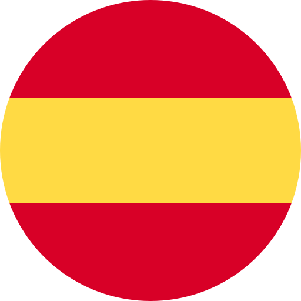

<!-- ============================================ -->
<!--                 Navigation                   -->
<!-- ============================================ -->

<header id="cs-navigation">
    <div class="cs-container">
        <a routerLink="/" class="cs-logo">
            
        </a>
        <!--Navigation List-->
        <nav class="cs-nav" role="navigation">
            <!--Mobile Nav Toggle-->
            <button class="cs-toggle">
                <div class="cs-box" aria-hidden="true">
                    <span class="cs-line cs-line1" aria-hidden="true"></span>
                    <span class="cs-line cs-line2" aria-hidden="true"></span>
                    <span class="cs-line cs-line3" aria-hidden="true"></span>
                </div>
            </button>
            <!-- We need a wrapper div so we can set a fixed height on the cs-ul in case the nav list gets too long from too many dropdowns being opened and needs to have an overflow scroll. This wrapper acts as the background so it can go the full height of the screen and not cut off any overflowing nav items while the cs-ul stops short of the bottom of the screen, which keeps all nav items in view no matter how mnay there are-->
            <div class="cs-ul-wrapper">
                <ul id="cs-expanded" class="cs-ul" aria-expanded="false">
                    <li class="cs-li">
                        <a routerLink="/" class="cs-li-link cs-active">
                            {{ 'home' | transloco }}
                        </a>
                    </li>
              
                    <li class="cs-li cs-dropdown" tabindex="0">
                        <span class="cs-li-link">
                            {{ 'services' | transloco }}
                            
                        </span>
                        <ul class="cs-drop-ul">
                            <li class="cs-drop-li">
                                <a routerLink="/paisajismo-jardines" class="cs-li-link cs-drop-link">{{ 'title' | transloco }}</a>
                            </li>
                            <li class="cs-drop-li">
                                <a routerLink="/mantenimiento-jardines" class="cs-li-link cs-drop-link">{{ 'gardenmaintenance' | transloco }}</a>
                            </li>
                            <li class="cs-drop-li">
                                <a routerLink="/mantenimiento-piscinas" class="cs-li-link cs-drop-link">{{ 'poolmaintenance' | transloco }}</a>
                            </li>
                        
                        </ul>
                    </li>
               
                    <li class="cs-li">
                        <a routerLink="/about" class="cs-li-link">
                            {{ 'contact' | transloco }}
                        </a>
                    </li>
                </ul>
            </div>
        </nav>
        <div class="cs-contact-group">
          
            <!-- <div class="cs-social"> -->
                <a (click)="onSetLanguage('es')" class="cs-social-link">
                    
                </a>
            
                <a (click)="onSetLanguage('en')" class="cs-social-link">
                    
                </a>
                <a (click)="onSetLanguage('de')" class="cs-social-link">
                    
                </a>
            <!-- </div> -->
        </div>
    </div>
  </header>
  